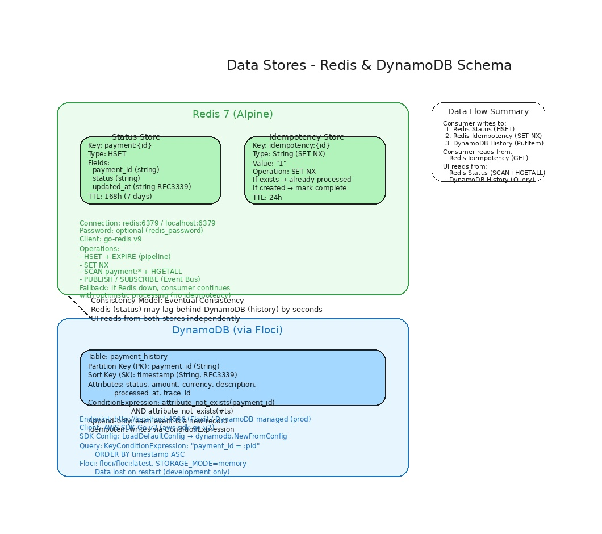
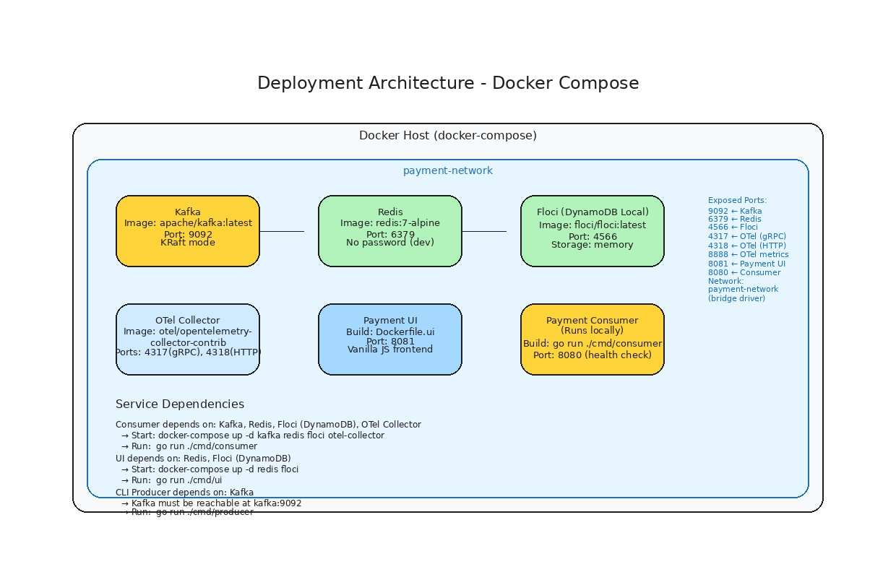
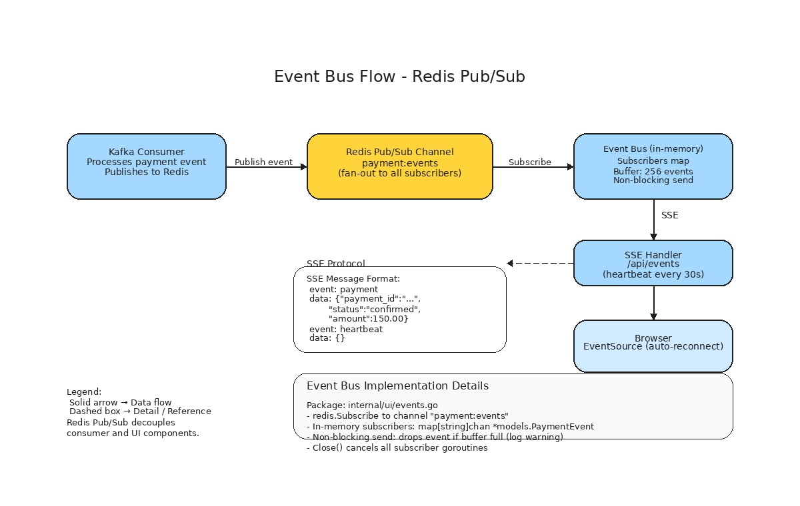

Arquitetura do Sistema
Visão geral da arquitetura e decisões técnicas do Payment Processor.
Visão Geral
O Payment Processor é um sistema distribuído de processamento de pagamentos baseado em microsserviços e mensageria assíncrona. A arquitetura segue o padrão Event-Driven com Kafka como espinha dorsal.
Diagrama de Componentes
╔══════════════════════════════════════════════════════════════════════╗
║ KAFKA CLUSTER ║
║ ║
║ ┌──────────────────────────────────────┐ ┌──────────────────────┐ ║
║ │ payment.events (3 partições) │ │ payment.events.dlq │ ║
║ │ - Produtor: API externa, CLI │ │ (1 partição) │ ║
║ │ - Consumidor: payment-consumer-group │ │ - Mensagens com │ ║
║ │ - Retenção: configurável │ │ falha permanente │ ║
║ └────────────────┬─────────────────────┘ └──────────▲───────────┘ ║
║ │ │ ║
╚═══════════════════│════════════════════════════════════│══════════════╝
│ │
Publica │ Publica │
│ (DLQ) │
┌───────────────┴──────────┐ │
│ │ │
▼ │ │
┌──────────────────┐ │ │
│ CLI Producer │ │ │
│ (cmd/producer) │ │ │
│ SyncProducer │ │ │
│ Valida antes │ │ │
│ de publicar │ │ │
└──────────────────┘ │ │
│ │
┌──────────────────────────────────────────────────────────────────────┐
│ CONSUMER SERVICE │
│ (cmd/consumer) │
│ │
│ ┌────────────────┐ ┌────────────────┐ ┌────────────────────┐ │
│ │ Validador │ │ Idempotência │ │ Status Updater │ │
│ │ (go-validator) │ │ (Redis SET NX)│ │ (Redis HSET) │ │
│ └────────┬───────┘ └───────┬────────┘ └──────────┬─────────┘ │
│ │ │ │ │
│ ┌────────┴──────────────────┴──────────────────────┴─────────┐ │
│ │ Retry Handler │ │
│ │ (3 tentativas, backoff exp + jitter) │ │
│ └────────┬─────────────────────────────────────────────┬───────┘ │
│ │ │ │
│ ┌─────┴─────┐ ┌────┴────┐ │
│ │ História │ │ DLQ │ │
│ │ DynamoDB │ │ Kafka │ │
│ └─────┬─────┘ └─────────┘ │
└───────────│──────────────────────────────────────────────────────────┘
│
│ Eventos via Redis Pub/Sub (canal: payment:events)
│
┌───────────▼──────────────────────────────────────────────────────────┐
│ PAYMENT UI │
│ (cmd/ui) │
│ │
│ ┌────────────────┐ ┌────────────────┐ ┌────────────────────┐ │
│ │ Event Bus │ │ REST API │ │ SSE Handler │ │
│ │ Redis Pub/Sub │ │ /api/payments │ │ /api/events │ │
│ │ + subscribers │ │ /api/metrics │ │ heartbeat 30s │ │
│ └────────────────┘ └────────────────┘ └────────────────────┘ │
│ │
│ ┌──────────────────────────────────────────────────────────────┐ │
│ │ Frontend (Vanilla JS + HTML + CSS) │ │
│ │ ┌───────────┐ ┌────────────┐ ┌────────────┐ │ │
│ │ │ Live Feed │ │ Payments │ │ History │ │ │
│ │ │ (SSE) │ │ Table │ │ Modal │ │ │
│ │ └───────────┘ └────────────┘ └────────────┘ │ │
│ └──────────────────────────────────────────────────────────────┘ │
└──────────────────────────────────────────────────────────────────────┘
╔══════════════════════════════════════════════════════════════════════╗
║ DATA STORES ║
║ ║
║ ┌──────────────┐ ┌────────────────────┐ ┌────────────────┐ ║
║ │ Redis │ │ DynamoDB │ │ Redis │ ║
║ │ (Status) │ │ (Payment History) │ │ (Idempotência) │ ║
║ │ payment:id │ │ payment_id (PK) │ │ idempotency:id │ ║
║ │ HSET fields │ │ timestamp (SK) │ │ SET NX + TTL │ ║
║ │ TTL 7 dias │ │ schemaless │ │ TTL 24h │ ║
║ └──────────────┘ └────────────────────┘ └────────────────┘ ║
╚══════════════════════════════════════════════════════════════════════╝

Data Stores: Redis para status (payment:id HSET, TTL 7d) e idempotência (SET NX, TTL 24h), DynamoDB para histórico permanente (payment_id PK, timestamp SK).
Observabilidade
╔══════════════════════════════════════════════════════════════════════╗
║ OBSERVABILIDADE ║
║ ║
║ ┌──────────────┐ ┌────────────────────┐ ┌────────────────┐ ║
║ │ Logs (slog) │ │ Tracing (OTel) │ │ Métricas │ ║
║ │ JSON output │ │ spans por mensagem│ │ counters + │ ║
║ │ stdout │ │ OTLP gRPC export │ │ histograms │ ║
║ └──────────────┘ └────────────────────┘ └────────────────┘ ║
║ ║
║ ┌──────────────────────────────────────────────────────────────┐ ║
║ │ OpenTelemetry Collector │ ║
║ │ OTLP Receiver → Batch Processor → Exporters (debug, Jaeger) │ ║
║ └──────────────────────────────────────────────────────────────┘ ║
╚══════════════════════════════════════════════════════════════════════╝

Stack de observabilidade: OpenTelemetry Collector com OTLP Receiver, Batch Processor e Exporters (debug, Jaeger). Logs estruturados via log/slog.

Arquitetura de deployment: Kafka, Redis, Floci (DynamoDB Local), OTel Collector e Payment UI em containers Docker, com aplicações executadas localmente.
Diagrama Interativo da Arquitetura
Diagrama interativo completo da arquitetura. Clique nos componentes destacados (bordas mais grossas) para navegar até a documentação detalhada.
Diagrama de sequência UML — Interação entre todos os componentes distribuídos, incluindo health checks e graceful shutdown.
Fluxo de Dados Detalhado
1. Publicação de Evento
[ Origem ] → Kafka Topic (payment.events)
├── CLI Producer (cmd/producer)
│ ├── Valida no cliente (reusa validator)
│ ├── Publica via SyncProducer
│ └── Confirma partition + offset
│
└── API Externa / Gateway (fora do escopo)
├── Publica no mesmo tópico
└── Mensagens seguem schema definido
2. Processamento (Consumer)
Kafka Message
│
▼
1. Acquire semaphore (worker pool)
│
▼
2. Validate payload
├── Sucesso → continua
└── Falha → DLQ (erro permanente)
│
▼
3. Idempotency Check (Redis)
├── Já processado → commit offset (skip)
└── Novo → MarkProcessed (SET NX, TTL 24h)
│
▼
4. Retry.Do (3 tentativas com backoff)
├── Atualiza Status (Redis HSET)
├── Registra Histórico (DynamoDB PutItem)
│
├── Sucesso → commit offset
└── Falha (exaustão) → DLQ

Pipeline de processamento: validação, idempotência, status update, histórico DynamoDB, retry com backoff e Dead Letter Queue.
3. Consulta (UI)
Browser
│
├── GET / → index.html (embed.FS)
│
├── GET /api/payments
│ └── Redis: SCAN payment:* → HGETALL
│
├── GET /api/payments/{id}/history
│ └── DynamoDB: Query por payment_id
│
├── GET /api/metrics
│ └── Redis: SCAN + contagem por status
│
└── GET /api/events (SSE)
└── EventBus ← Redis Pub/Sub (canal payment:events)
Padrões Distribuídos Utilizados
| Padrão | Implementação |
|---|---|
| Event-Driven | Kafka como message broker central |
| Consumer Group | payment-consumer-group para escalabilidade |
| Idempotência | Redis SET NX + DynamoDB ConditionExpression |
| Retry with Backoff | Exponencial (1x, 3x, 9x) + jitter (±25%) |
| Dead Letter Queue | Tópico Kafka dedicado payment.events.dlq |
| Worker Pool | Semáforo com chan struct{} (configurável) |
| Circuit Breaker | Preparado para DynamoDB (gobreaker) |
| Graceful Shutdown | Context cancellation + signal handling |
| Health Check | Endpoints /healthz e /readyz |
| Server-Sent Events | Streaming de eventos em tempo real para o browser |
| Pub/Sub | Redis Pub/Sub para desacoplar consumer e UI |
| Observabilidade | OpenTelemetry (tracing + métricas + logs) |
Decisões Arquiteturais (ADRs)
ADR-001: Kafka como Message Broker
- Contexto: Necessário sistema de mensageria distribuído com garantia at-least-once
- Decisão: Kafka (via sarama)
- Justificativa: Maduro, consumer groups, partições para paralelismo, retenção configurável
ADR-002: Redis para Idempotência e Status
- Contexto: Necessário armazenamento de baixa latência para verificação de idempotência e status
- Decisão: Redis
- Justificativa:
SET NXatômico, TTL nativo, latência sub-milissegundo, pipeline
ADR-003: DynamoDB para Histórico
- Contexto: Necessário armazenamento permanente e escalável
- Decisão: DynamoDB
- Justificativa: Gerenciado, escalável,
ConditionExpressionnativa, schemaless
ADR-004: Retry Síncrono (não republicar no Kafka)
- Contexto: Mensagens com falha recuperável precisam ser retentadas
- Decisão: Retry síncrono com backoff exponencial
- Justificativa: Simplicidade, evita loops de repúblicação, preserva ordenação
ADR-005: SSE para Streaming em Tempo Real
- Contexto: UI precisa exibir eventos em tempo real
- Decisão: Server-Sent Events (SSE)
- Justificativa: Unidirecional (suficiente), reconexão automática nativa, implementação simples
ADR-006: Redis Pub/Sub como Event Bus
- Contexto: Consumer e UI em processos separados precisam compartilhar eventos
- Decisão: Redis Pub/Sub (canal
payment:events) - Justificativa: Redis já é dependência, Pub/Sub leve, sem acoplamento direto

Fluxo do Event Bus: Consumer publica eventos no Redis Pub/Sub, Payment UI assina o canal e encaminha para conexões SSE.
ADR-007: CLI Separada do Consumer
- Contexto: Ferramenta de publicação de eventos para testes
- Decisão: Binário separado (
cmd/producer) - Justificativa: Independência, sem acoplamento, consumer não ganha dependência de CLI
ADR-008: Consistência Eventual
- Contexto: Status no Redis vs histórico no DynamoDB
- Decisão: Consistência eventual entre Redis (status) e DynamoDB (histórico)
- Justificativa: Baixa latência, alta disponibilidade. Reconciliação pode ser feita externamente
Tradeoffs
| Decisão | Prós | Contras |
|---|---|---|
| Consistência eventual | Baixa latência, tolerante a falhas | Risco de leitura defasada |
| TTL idempotência 24h | Simples, automático | Mensagens >24h podem ser reprocessadas |
| Worker pool fixo | Previsível, controlado | Subutilização em baixa carga |
| Validação restritiva | Dados garantidos, segurança | Mensagens fora do formato são rejeitadas |
| Vanilla JS na UI | Zero dependências, sem build step | Mais código manual |
Segurança
- Secrets: via variáveis de ambiente (nunca hardcoded)
- Payload validation: limite de 10 KB, sem caracteres de controle
- Logs: sem dados sensíveis (amount, descrições completas)
- Headers de segurança:
X-Content-Type-Options,X-Frame-Options,Referrer-Policy - Path traversal: prevenido pelo
embed.FS